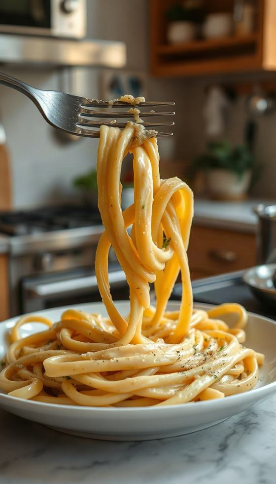
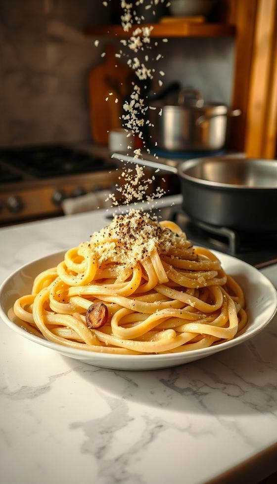
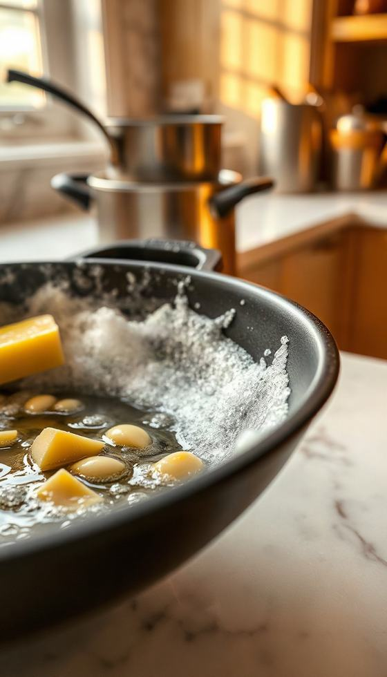
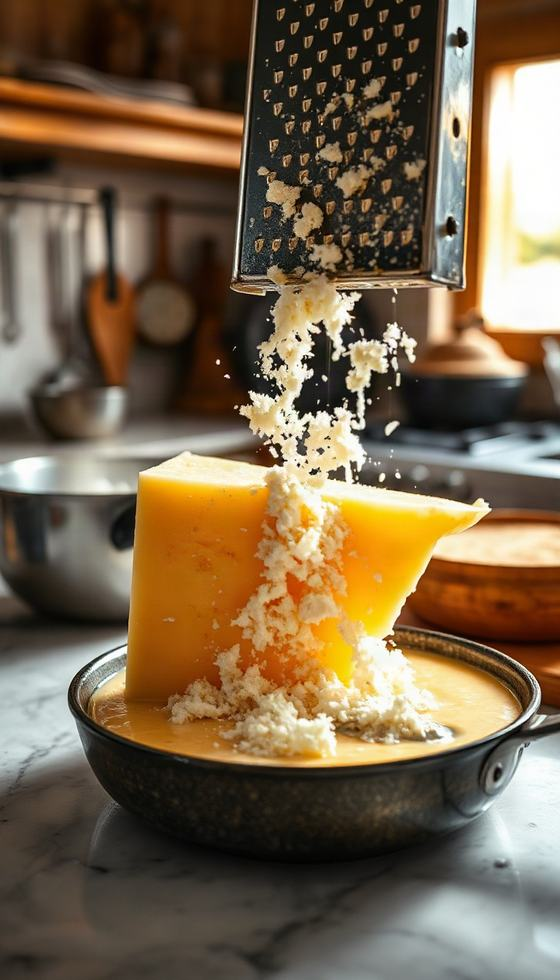
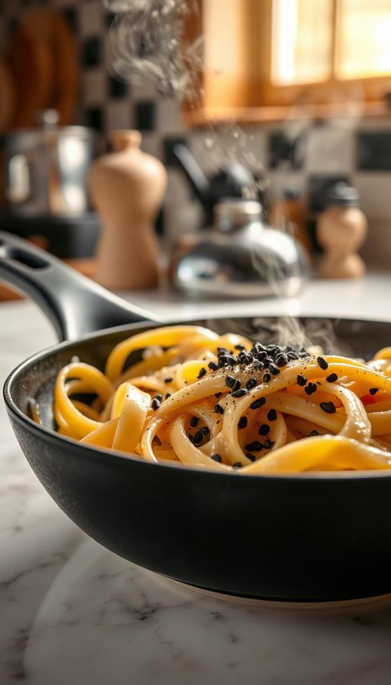

Budget Bite Club
Budget Bite ClubCopycat Olive Garden Fettuccine Alfredo (Pantry Version)
About $4.50* · 4 servings · 20 min
*Prices are estimates and may differ from what you pay. How we price recipes
Copycat Olive Garden Fettuccine Alfredo for $4.50 total. You probably have everything for this right now.





Ingredients
- 1 lb dry fettuccine
- 1 tablespoon kosher salt (for pasta water)
- 3 tablespoons unsalted butter
- 3 cloves garlic, minced
- 1 tablespoon all-purpose flour
- 1 1/2 cups whole milk
- 1 cup finely grated parmesan (about 3 oz)
- 1/2 teaspoon black pepper, plus more to taste
- 1/2 cup reserved pasta water
Steps
- Bring a large pot of water to a boil, add 1 tablespoon salt and the fettuccine. Cook 1 minute less than package time, about 9-10 minutes.
- While pasta cooks, melt 3 tablespoons butter in a 12-inch skillet over medium heat. Add the minced garlic and cook 30 seconds until fragrant, not browned.
- Whisk in 1 tablespoon flour and cook 30 seconds. Slowly whisk in 1 1/2 cups milk and simmer 3-4 minutes, whisking, until the sauce coats the back of a spoon.
- Take the skillet off the heat and let it sit 30 seconds. Whisk in the parmesan a handful at a time until smooth (too much heat makes the cheese grainy).
- Use tongs to move the pasta straight into the sauce with about 1/4 cup pasta water. Toss over low heat 1 minute until glossy, adding more pasta water as needed.
- Season with black pepper and a pinch of salt to taste. Serve immediately with extra parmesan.
What you'll need
Gear links go to Amazon (Amazon.ca, or Amazon.com in the US). As an Amazon Associate I earn from qualifying purchases, at no extra cost to you.
Watch the videoMore $5 recipes
About the prices: they're estimates, not quotes. Since Nov 2026 they're based on Statistics Canada's monthly average retail prices where an item is listed (Open Government Licence - Canada), otherwise on typical Canadian grocery prices, and count only the amount of each ingredient used, not whole packages. What you pay will vary by store, location, brand, sales, taxes and date, and any pantry staples you need to buy will add to it. Recipe visuals and narration are AI-generated.